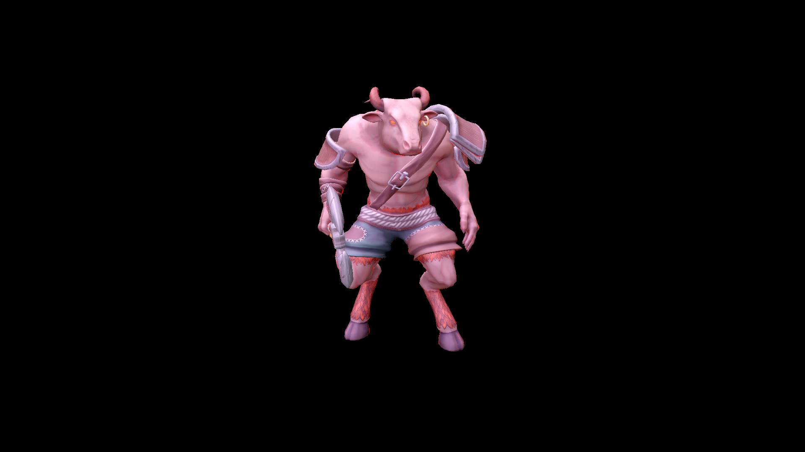

실제 클라이언트의 모델·재질·Deferred 셰이더를 사용한 고정 모델 비교 화면입니다. 1920×1080, idle 0초, 동일 카메라·조명입니다. 이미지를 누르면 원본 크기로 볼 수 있습니다. 맵·전투 UI와 그림자 가림은 제외했습니다.

해상도·mip 수는 유지했습니다. BC7은 손실 압축이며, Ogre의 R8 Metallic은 원본을 유지했습니다. 강한 빨간색 테두리와 일부 단색 재질은 기존 게임 셰이더에서도 보입니다. 이 화면만으로 모든 전투 환경의 화질을 보장하지 않습니다.